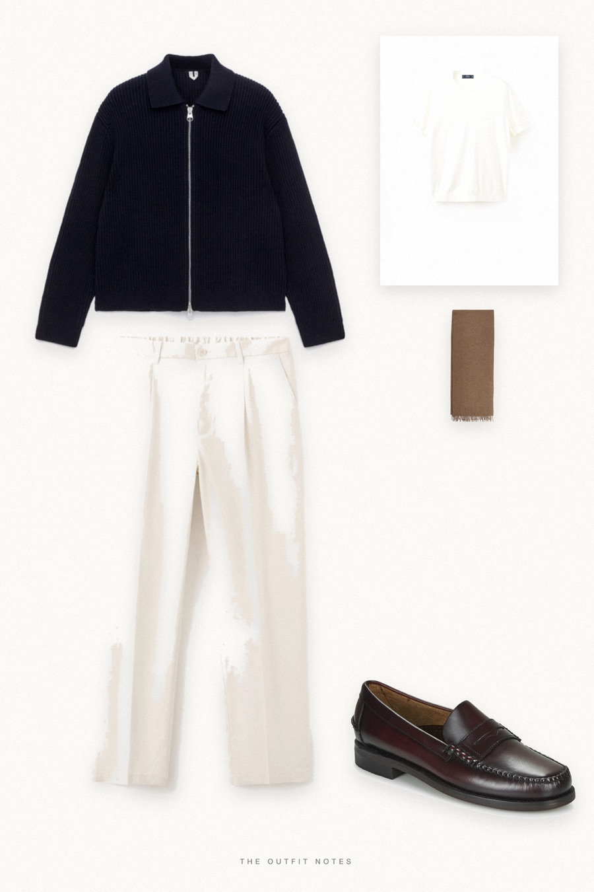

Navy Ecru
easy winter weekday

An easy winter outfit for men: navy wool-cotton zip cardigan over an ecru fine-knit tee, light cream pleated trousers that drape to a slight break, burgundy Sebago Classic Dan loafers and a camel wool scarf. Smart casual menswear with an old money feel, made for a Paris café or a cold Saturday in town.
The pieces
This page contains affiliate links: if you buy through them, we may earn a commission at no extra cost to you. Disclosure.
 ARKET
ARKET
Navy textured zip cardigan
Shop Mango
Mango
Ecru fine-knit crew-neck tee
Shop Mango
Mango
Cream pleated fluid trousers
Shop Sebago
Sebago
Burgundy boat shoes
Shop ARKET
ARKET
Camel wool scarf
Shop
Prices are indicative, taken when the look was published, and may have changed. Pictures of the outfit are AI-generated illustrations of real products; the product photos are the retailers' own.
Published 1 October 2026.